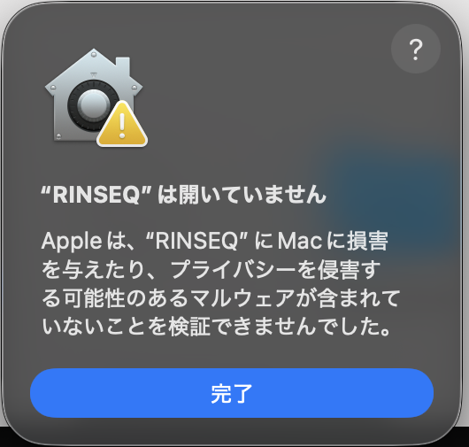

YOUTUBE EDITING × MATCHING × TIME-SAVINGYouTube編集と、
仕事のつながりを、
ひとつのアプリで。
RINSEQは、YouTube動画の編集を速く終わらせる時短ツールと、企業・編集者・同業のクリエイターとつながるマッチング機能を合わせた編集アプリです。
AIAIで荒編集・AIに相談して直す、もできますダウンロードを始めました(Mac)
⚠ ベータ版のため、初めて開く時にMacの確認画面「“RINSEQ”は開いていません」が出ます。ウイルスではありません。下の手順で開けます(2回目からは普通に開けます)。製品版では出なくなる予定です。

プライバシーとセキュリティ
連絡先
カレンダー
セキュリティ
使用がブロックされました。
このまま開く
ダウンロードを始めました(Windows)
⚠ ベータ版のため、初めて開く時にWindowsの確認画面「WindowsによってPCが保護されました」が出ます。ウイルスではありません。下の手順で開けます。製品版では出なくなる予定です。
RINSEQ-Windows-Setup.exe
一般的にダウンロードされていません
削除… その他
Windows によって PC が保護されました
Microsoft Defender SmartScreen は認識されないアプリの起動を停止しました。このアプリを実行すると、PC に問題が起こる可能性があります。
詳細情報Windows によって PC が保護されました
アプリ: RINSEQ-Windows-Setup.exe
発行元: 不明な発行元
YouTube編集
カット・テロップ・サムネイル・チャプターまで、投稿に必要な作業がそろっています。
マッチング
企業の案件、編集者の募集、同業者とのコラボ。依頼と応募がアプリの中で完結します。
編集の時短
無音や「えーと」を自動でカット。AIが荒編集をして、直し方の相談にも乗ります。
むずかしそうな編集も、初めてでもかんたんに。
動画を作る・時間を短くする・仕事につなげる。
話していない時間を、まとめて消す。
動画を読み込むと、設定した音量(dB)より小さい状態が続く所を自動でカットします。「無音になってから何コマ目から切るか」「話し出す何コマ前まで切るか」も決められるので、声の頭や語尾が切れません。
はじめの設定は「-30dB以下が1秒以上続いた所」「無音になって5コマ目から、話し出す3コマ前まで」です。
AIで荒編集。仕上げは相談しながら。
ボタンひとつで、AIが下書きの編集をタイムラインに直接行います。あとは気になる所を選んで、自由な言葉で相談するだけ。
無音で動きの少ない所をカット
話していなくて、映像もほとんど動いていない所に分割を入れてカットします。
文字起こしをAIが確認
文字起こしの聞き間違い(名前・言葉の取り違え)をAIが見つけて直します。
テロップと画像を配置
テロップを入れ、素材の画像は「どこに入れますか?」とAIが聞いてから置きます。
相談して仕上げる
トラックや範囲を選んで「ここ間延びしてる?」と聞くと、AIが直し方を出します。「OK」でタイムラインがまとめて変わり、Ctrl+Z 1回で戻せます。
RINSEQコイン
AIの機能は、使った分だけRINSEQコインで支払います。新しく登録した方には10コインをお配りします。
※ AIなので完璧ではありません。お客様の編集の結果から、少しずつ学んでいきます。※ AIは動画や画像を新しく作ること(動画生成)はできません。映像そのものはAIに送りません。 料金の詳しい説明 →
作るほど上がる、冒険者ランク。
書き出しをしたプロジェクトの数でGからSSSまでランクが上がります。ランクは色つきのバッジで名前の横に表示されます。30日間書き出さないと1つ下がります。